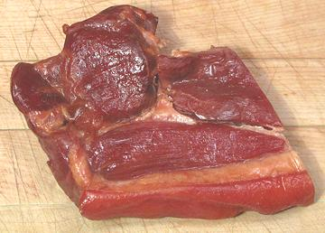

Chinese Cured Smoked Ham

Much different from our hams, this one is quite dry, sweet and seasoned
with soy sauce and smoke. It is meant to be an ingredient, cut into small
pieces, rather than being eaten as a feature item.
The photo specimen, purchased from a large Asian market in Los Angeles,
was made by Hsin Tung Yang Foods Company of San Francisco, California, so
we can be pretty sure it's unleaded and contains no melamine.
Ingredients: pork ham, sugar, salt, soy sauce, sodium nitrite - smoked
with brown sugar.
More on Hams
More on Pork Products
Buying:
This product can be found in larger Asian markets.
Tightly vacuum packed in 14 ounce slabs, it is not generally refrigerated
Storage:
Although it is unrefrigerated at the store, I
keep it in the fridge if it will be long before use. Of course, once
opened it should be refrigerated, tightly wrapped and consumed within a
week or so.
Cooking:
This product is generally cut into small pieces
and included in stir fries, stews and the like. If used in a stir fry
where it will get little cooking time it should be cut quite thin because
it's pretty stiff.
Subst:
Chinese cured baccon would be closest, but if you
don't have that either, Chinese sausage will probably do well enough.
ap_chhamz* 120808 - www.clovegarden.com
©Andrew Grygus - agryg@clovegarden.com - Photos
on this page not otherwise credited © cg1
- Linking to and non-commercial use of this page permitted